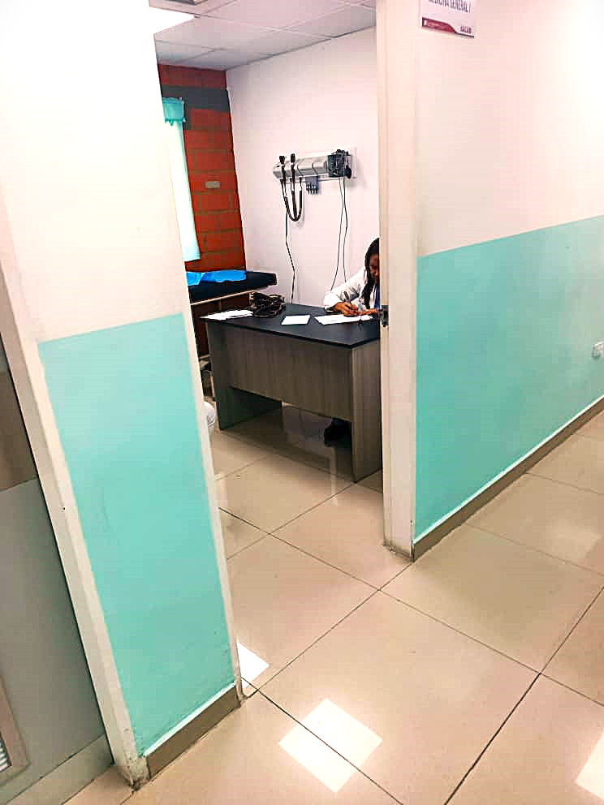
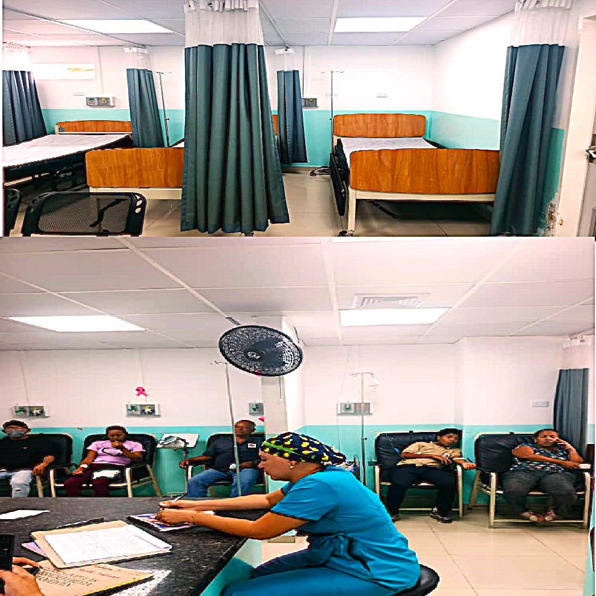
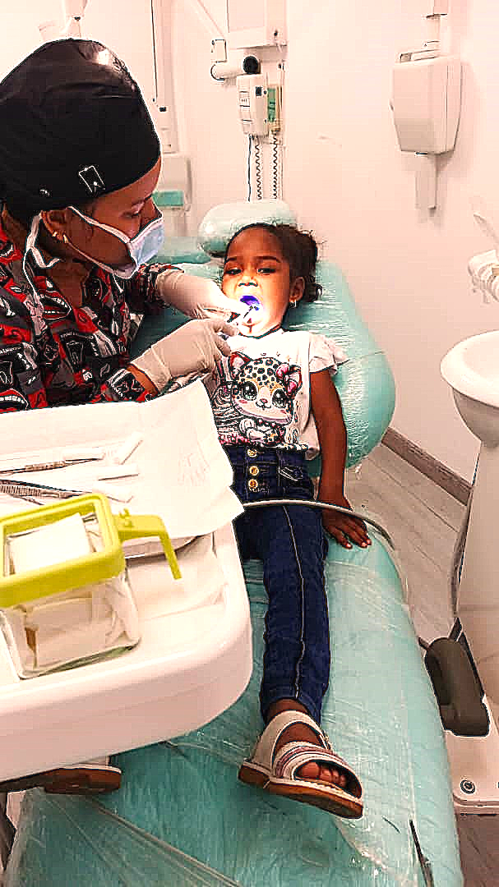
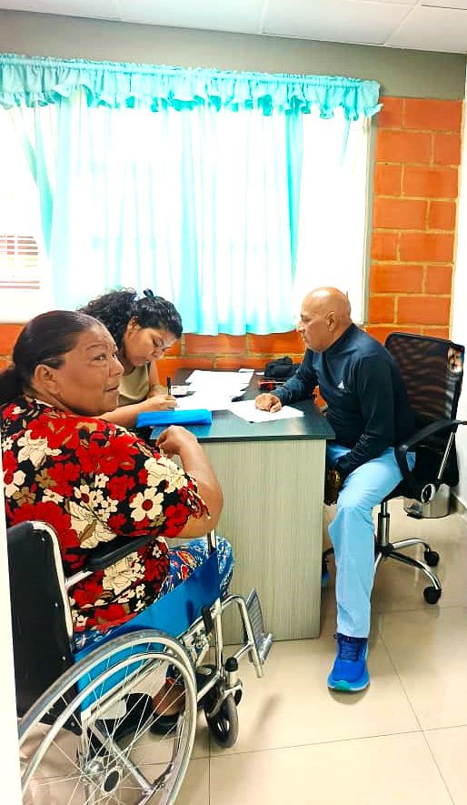
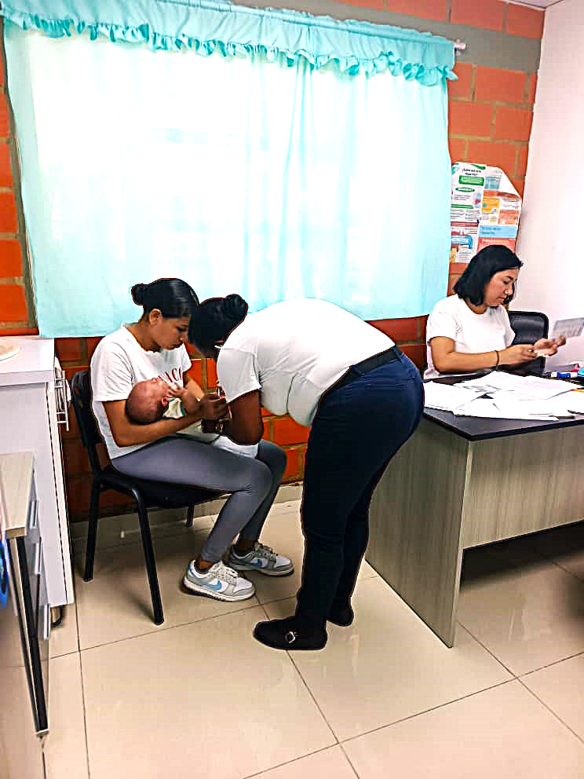
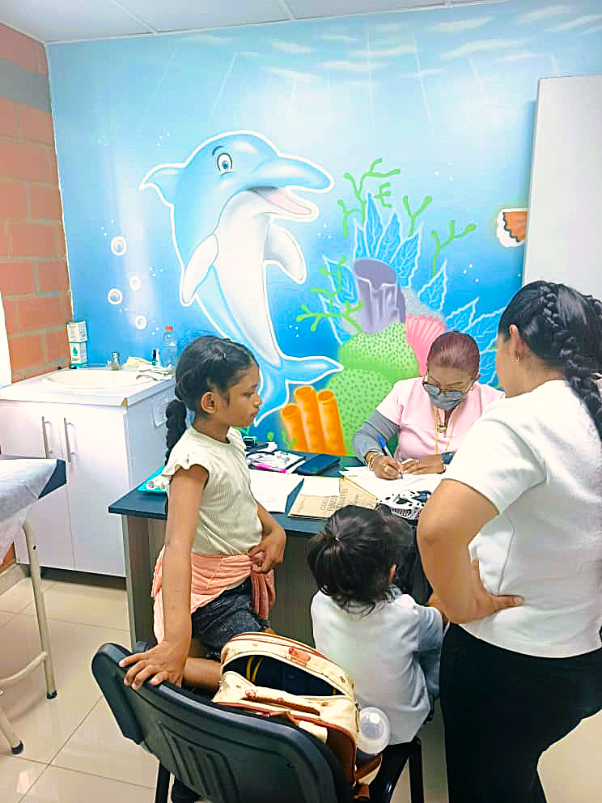
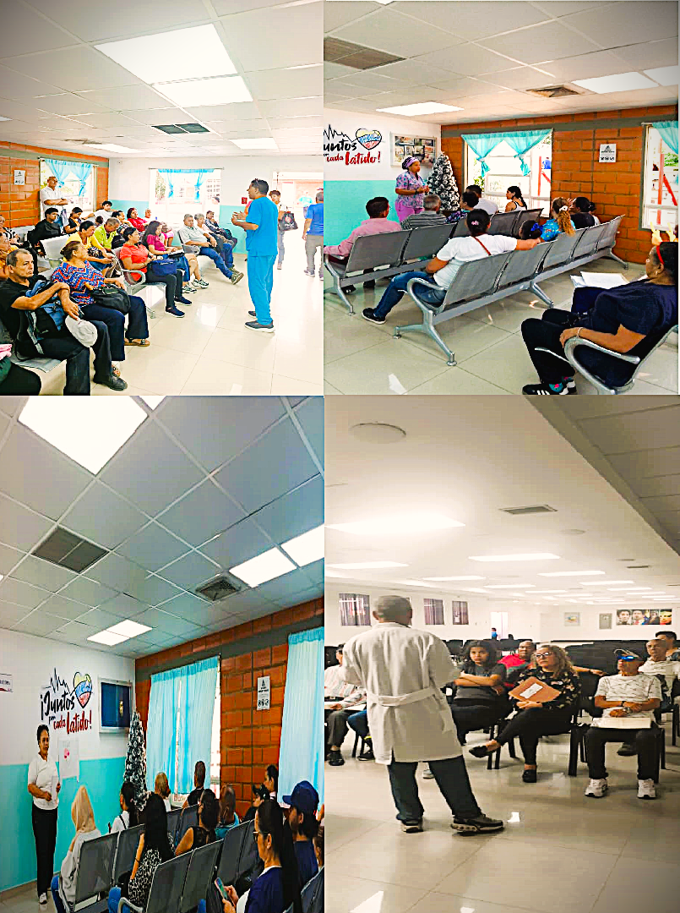
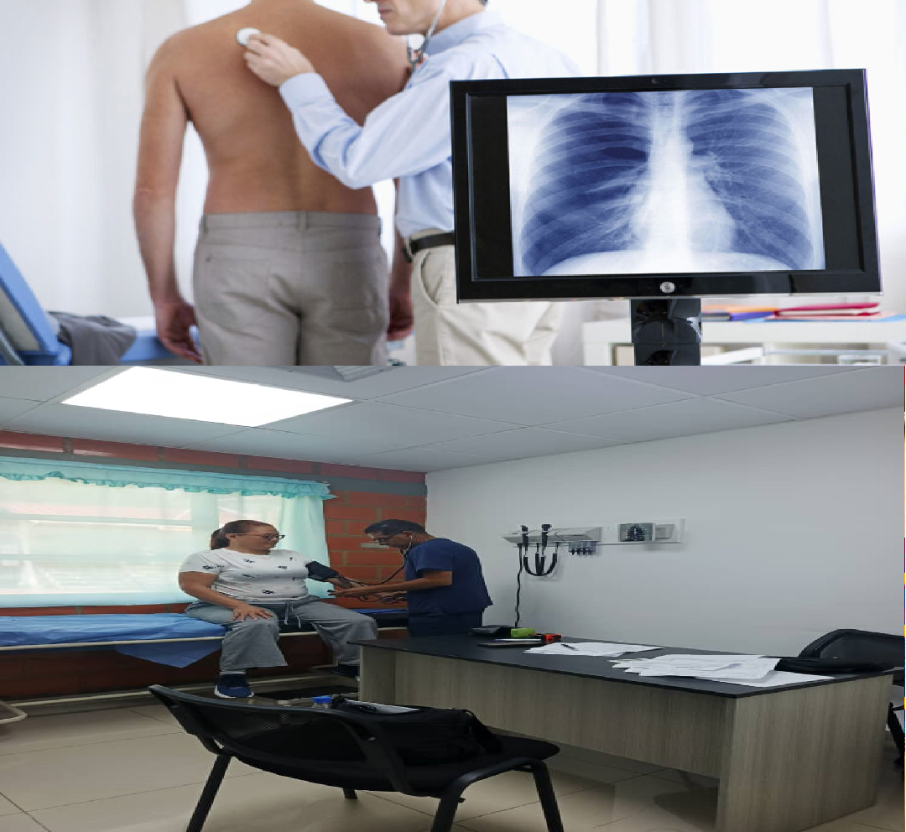
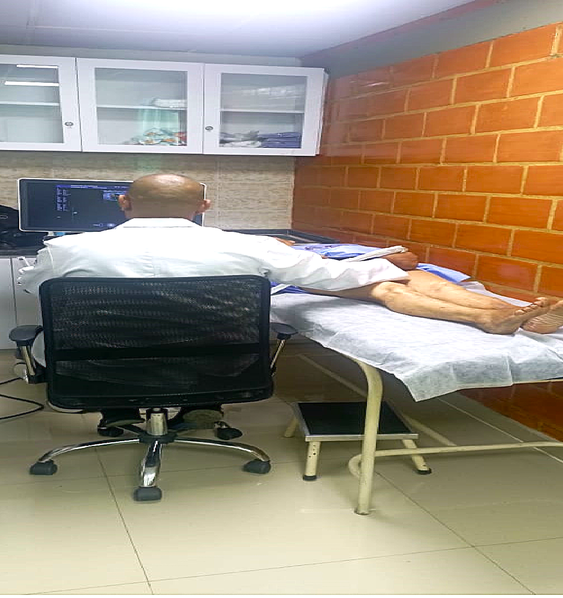
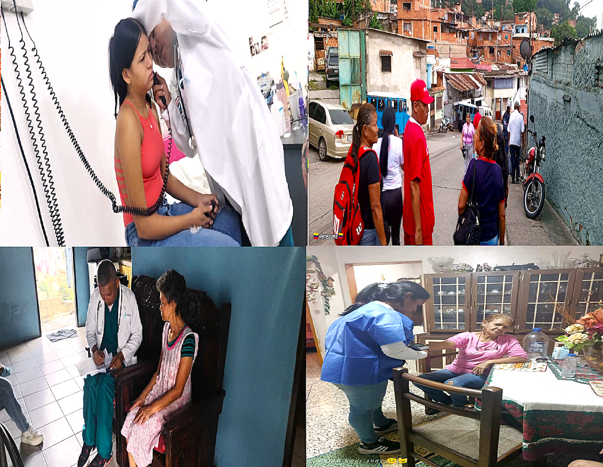

Nuestros Servicios

Medicina General
Es una especialidad médica que se enfoca en la atención primaria, integral y continua de pacientes de todas las edades.

Emergencia
Condición médica que amenaza la vida o causa daño grave y requiere atención médica inmediata e impostergable.

Odontologia
Se enfoca en la prevención, diagnóstico y tratamiento de enfermedades y trastornos de la boca, los dientes, las encías y las estructuras relacionadas, como la mandíbula

Traumatologia
Trata lesiones traumáticas: fracturas, esguinces, luxaciones y desgarros. Enfermedades degenerativas: como la artrosis. Problemas congénitos y de desarrollo: como la escoliosis o la displasia de cadera. Lesiones deportivas: comunes en atletas de cualquier nivel. Dolor crónico en articulaciones o músculos.

Inmunizacion
Vuelve resistente a una enfermedad infecciosa, ya sea de forma natural o artificial mediante la vacunación.

Pediatria
Su labor incluye la prevención, diagnóstico y tratamiento de enfermedades, así como el monitoreo del crecimiento y desarrollo infantil, incluyendo aspectos físicos, emocionales y sociale.

Secciones Educativas
Las Charlas sobre una amplia gama de temas, como prevención de enfermedades (infecciosas, crónicas, salud mental), salud pública, temas específicos como salud bucal o atención a poblaciones vulnerables, o sobre habilidades para profesionales de la salud, como la comunicación efectiva.

Neumologia
Especialidad médica que se dedica al estudio, diagnóstico, tratamiento y prevención de las enfermedades del aparato respiratorio, incluyendo pulmones, vías aéreas, pleura y mediastino.
 Ecografia
Ecografia
Prueba médica que utiliza ondas sonoras de alta frecuencia para crear imágenes del interior del cuerpo.

Ecos Duplex
Examen no invasivo que utiliza ondas sonoras para crear imágenes de los vasos sanguíneos y, al mismo tiempo, mostrar la velocidad y dirección del flujo sanguíneo dentro de ellos.

Jornada de Salud
Esta actividad que facilita el acceso a los servicios de salud individuales y colectivos, mediante el acercamiento de los mismos a las comunidades que los requieren.
 Simulacro de Evacuacion y Prevención de Desastres
Simulacro de Evacuacion y Prevención de Desastres